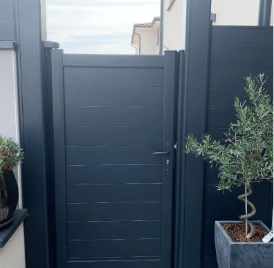
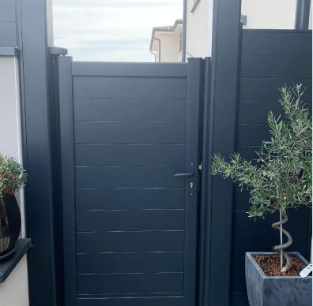

Portails et portes de garage
{% include reduction.html %} {% include contact.html %}Portes de garage
À enroulement ou sectionnelle, les portes de garage proposent des solutions innovantes et des produits qui s'accordent à tous les besoins. Nos produits motorisés permettent une ouverture automatisée en toute simplicité. Trouvez en toute simplicité la porte de garage qui correspond à vos envies.
Elles sont conçues en réponse aux besoins de la construction, permettant une meilleure isolation car les pertes de chaleur sont éliminées dans les endroits les plus vulnérables du tablier de la porte.
Cela représente d'avantage d'économies d'énergie pour la maison et pour votre confort.
Portails, clôtures et gardes corps
De style contemporain ou traditionnel, nos portails, clôtures et garde-corps structurent votre espace en toute légèreté.
Ajouré, semi-plein ou plein, ils préservent votre intimité tout en harmonie avec votre habitation.